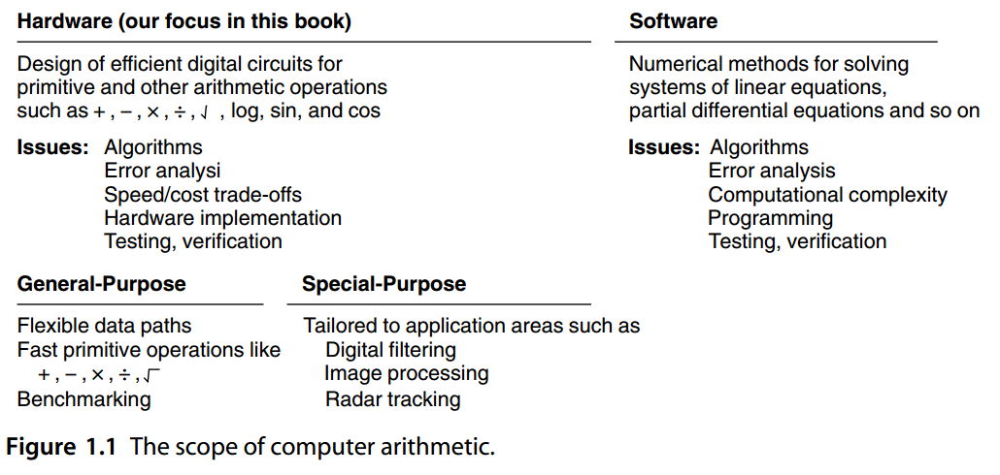
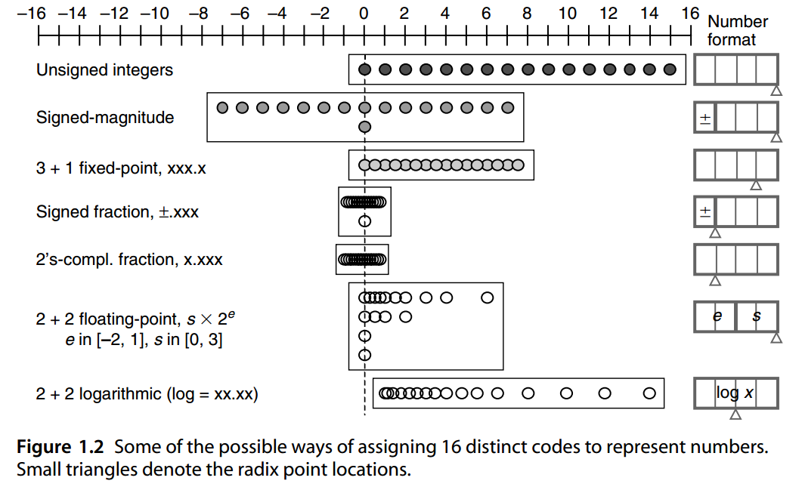
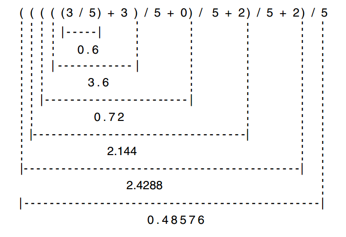
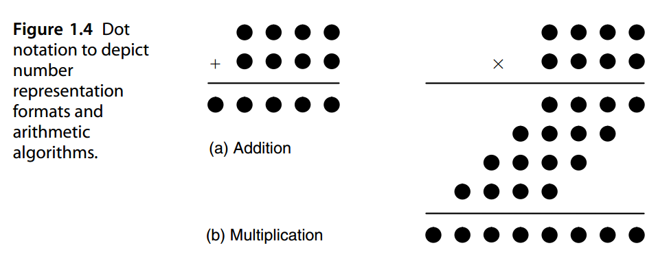

1. 数字与算术
Numbers and Arithmetic
“Mathematics is the queen of the sciences and arithmetic is the queen of mathematics.”
CARL FRIEDRICH GAUSS
“数学是科学的女王，算术是数学的女王。”
卡尔·弗里德里希·高斯
This chapter motivates the reader, sets the context in which the material in the rest of the book is presented, and reviews positional representations of fixed-point numbers. The chapter ends with a review of methods for number radix conversion and a preview of other number representation methods to be covered.
本章旨在激发读者的兴趣，设置本书其余部分的材料呈现的背景，并回顾定点数的位置表示。本章最后回顾了不同基数转换的方法和其他数字表示方法的预览。
Chapter topics include: 章节主题包括：
1.1 什么是计算机算术 WHAT IS COMPUTER ARITHMETIC
1.2 启发性示例 MOTIVATING EXAMPLES
1.3 数字及其编码 NUMBERS AND THEIR ENCODINGS
1.4 固定基数的位置数字表示系统 FIXED RADIX POSITIONAL NUMBER SYSTEMS
1.5 数字基数转换 NUMBER RADIX CONVERSION
1.6 数表示系统的分类 CLASSES OF NUMBER REPRESENTATIONS
1.1 什么是计算机算术？
A sequence of events, begun in late 1994 and extending into 1995, embarrassed the world’s largest computer chip manufacturer and put the normally dry subject of computer arithmetic on the front pages of major newspapers. The events were rooted in the work of Thomas Nicely, a mathematician at the Lynchburg College in Virginia, who was interested in twin primes (consecutive odd numbers such as 29 and 31 that are both prime). Nicely’s work involved the distribution of twin primes and, particularly, the sum of their reciprocals S = 1 / 5 + 1 / 7 + 1 / 11 + 1 / 13 + 1 / 17 + 1 / 19 + 1 / 29 + 1 / 31 + · · · + 1 /p + 1 /(p + 2 ) + · · · . While it is known that the infinite sum S has a finite value, no one knows what the value is.
从 1994 年底开始一直持续到 1995 年的一系列事件让世界上最大的计算机芯片制造商陷入尴尬境地，并将通常枯燥的计算机算术主题登上了各大报纸的头版。这些事件源于弗吉尼亚林奇堡学院数学家托马斯·尼斯利 (Thomas Nicely) 的工作，他对孪生素数（连续奇数，例如 29 和 31 都是素数）很感兴趣。 Nicely 的工作涉及孪生素数的分布，特别是它们的倒数之和 S = 1 / 5 + 1 / 7 + 1 / 11 + 1 / 13 + 1 / 17 + 1 / 19 + 1 / 29 + 1 / 31 +· · · + 1 /p + 1 /(p + 2 ) + · · · 。虽然已知无限和 S 是一个有限值，但没有人知道该值是多少。
Nicely was using several different computers for his work and in March 1994 added a machine based on the Intel Pentium processor to his collection. Soon he began noticing inconsistencies in his calculations and was able to trace them back to the values computed for \(1/p\) and \(1/(p + 2 )\) on the Pentium processor. At first, he suspected his own programs, the compiler, and the operating system, but by October, he became convinced that the Intel Pentium chip was at fault. This suspicion was confirmed by several other researchers following a barrage of e-mail exchanges and postings on the Internet.
Nicely 在工作中使用了几台不同的计算机，并于 1994 年 3 月在他的收藏中添加了一台基于 Intel Pentium 处理器的计算机。很快他开始注意到 计算中的不一致之处，并能够将其追溯到奔腾处理器上为 \(1/p\) 和 \(1/(p + 2 )\) 计算的值。起初，他怀疑自己的程序、编译器和操作系统，但到了十月份，他确信英特尔奔腾芯片出了问题。经过一系列电子邮件交流和互联网上的发帖后，其他几位研究人员证实了这一怀疑。
The diagnosis finally came from Tim Coe, an engineer at Vitesse Semiconductor. Coe built a model of Pentium’s floating-point division hardware based on the radix-4 SRT (named for Sweeny, Robertson, and Tocher) algorithm and came up with an example that produces the worst-case error. Using double-precision floating-point computation, the ratio c = 4 195 835 / 3 145 727 = 1.333 820 44 · · · was computed as 1.333 739 06 on the Pentium. This latter result is accurate to only 14 bits; the error is even larger than that of single-precision floating-point and more than 10 orders of magnitude worse than what is expected of double-precision computation [Mole95].
最终诊断来自Vitesse Semiconductor 的工程师Tim Coe。 Coe 基于 radix-4 SRT（以 Sweeny、Robertson 和 Tocher 命名）算法构建了 Pentium 浮点除法硬件模型，并提出了一个产生最坏情况错误的示例。使用双精度浮点计算，比率 c = 4 195 835 / 3 145 727 = 1.333 820 44 · · · 在奔腾CPU上计算为 1.333 739 06。后一个结果仅精确到 14 比特；该误差甚至比单精度浮点的误差还要大，并且比双精度计算的预期误差还要差 10 个数量级以上 [Mole95]。
The rest, as they say, is history. Intel at first dismissed the severity of the problem and admitted only a “subtle flaw,” with a probability of 1 in 9 billion, or once in 27,000 years for the average spreadsheet user, of leading to computational errors. It nevertheless published a “white paper” that described the bug and its potential consequences and announced a replacement policy for the defective chips based on “customer need”; that is, customers had to show that they were doing a lot of mathematical calculations to get a free replacement. Under heavy criticism from customers, manufacturers using the Pentium chip in their products, and the on-line community, Intel later revised its policy to no-questions-asked replacement.
其余的，正如他们所说，是历史。英特尔起初否认了问题的严重性，只承认存在一个“微妙的缺陷”，导致计算错误的概率为 90 亿分之一，或者对于普通电子表格用户来说每 27,000 年一次。尽管如此，它还是发布了一份“白皮书”，描述了该漏洞及其潜在后果，并宣布了基于“客户需求”的缺陷芯片的更换政策；也就是说，客户必须证明他们进行了大量的数学计算才能获得免费更换。在客户、产品中使用奔腾芯片的制造商以及在线社区的严厉批评下，英特尔后来将其政策修改为无条件更换。
Whereas supercomputing, microchips, computer networks, advanced applications (particularly game-playing programs), and many other aspects of computer technology have made the news regularly, the Intel Pentium bug was the first instance of arithmetic (or anything inside the CPU for that matter) becoming front-page news. While this can be interpreted as a sign of pedantic dryness, it is more likely an indicator of stunning technological success. Glaring software failures have come to be routine events in our information-based society, but hardware bugs are rare and newsworthy.
而超级计算、微芯片、计算机网络、高级应用（特别是游戏程序）以及计算机技术的许多其他方面都经常成为新闻，英特尔奔腾 bug 是算术（或 CPU 内部的任何相关事物）成为头版新闻的第一个实例。虽然这可以被解释为迂腐枯燥的表现，但它更可能是令人惊叹的技术成功的指标。在我们的信息社会中，明显的软件故障已成为家常便饭，但硬件错误却很少见且具有新闻价值。
Having read the foregoing account, you may wonder what the radix-4 SRT division algorithm is and how it can lead to such problems. Well, that’s the whole point of this introduction! You need computer arithmetic to understand the rest of the story. Computer arithmetic is a subfield of digital computer organization. It deals with the hardware realization of arithmetic functions to support various computer architectures as well as with arithmetic algorithms for firmware or software implementation. A major thrust of digital computer arithmetic is the design of hardware algorithms and circuits to enhance the speed of numeric operations. Thus much of what is presented here complements the architectural and algorithmic speedup techniques studied in the context of high-performance computer architecture and parallel processing.
读完上面的内容，你可能想知道radix-4 SRT除法算法是什么以及它是如何导致此类问题的。好了，这就是本次介绍的重点！你需要计算机算术来理解故事的其余部分。计算机算术是数字计算机组织的一个子领域。它涉及算术函数的硬件实现以支持各种计算机体系结构以及用于固件或软件实现的算术算法。数字计算机算术的一个主要推动力是硬件算法和电路的设计，以提高数字运算的速度。因此，这里介绍的大部分内容补充了在高性能计算机体系结构和并行处理的背景下研究的体系结构和算法加速技术。
Much of our discussion relates to the design of top-of-the-line CPUs with high-performance parallel arithmetic circuits. However, we will at times also deal with slow bit-serial designs for embedded applications, where implementation cost and input/output pin limitations are of prime concern. It would be a mistake, though, to conclude that computer arithmetic is useful only to computer designers. We will see shortly that you can use scientific calculators more effectively and write programs that are more accurate and/or more efficient after a study of computer arithmetic. You will be able to render informed judgment when faced with the problem of choosing a digital signal processor chip for your project. And, of course, you will know what exactly went wrong in the Pentium.
我们的大部分讨论都与具有高性能并行运算电路的顶级 CPU 的设计有关。然而，我们有时也会处理嵌入式应用的慢速位串行设计，其中实现成本和输入/输出引脚限制是首要考虑的问题。然而，如果认为计算机算术只对计算机设计者有用，那就错了。我们很快就会看到，在学习计算机算术之后，您可以更有效地使用科学计算器并编写更准确和/或更高效的程序。你会当面临为您的项目选择数字信号处理器芯片的问题时，能够做出明智的判断。当然，您也会知道奔腾到底出了什么问题。

| 硬件（本书的重点） | 软件 | |
|---|---|---|
| 为基础算术和其他运算设计高效的数字电路 | 如 + 、 − 、 × 、 ÷ 、对数、正弦和余弦。 | 数值方法求解线性方程组，偏微分方程等 |
| 问题： | 算法 错误分析 速度/成本权衡 硬件实现 测试、验证 | 问题：算法 错误分析 计算复杂度 编程 测试、验证 |
| 一般用途 | 特殊目的用途 | |
| 灵活的数据路径 | 适合应用领域，例如数字滤波 | |
| 快速原始操作，例如 + , − , × , ÷ | 图像处理 | |
| 基准测试 | 雷达追踪 |
图1.1 计算机算术的范围。
Figure 1.1 depicts the scope of computer arithmetic. On the hardware side, the focus is on implementing the four basic arithmetic operations (five, if you count square-rooting), as well as commonly used computations such as exponentials, logarithms, and trigonometric functions. For this, we need to develop algorithms, translate them to hardware structures, and choose from among multiple implementations based on cost–performance criteria. Since the exact computations to be carried out by the general-purpose hardware are not known a priori, benchmarking is used to predict the overall system performance for typical operation mixes and to make various design decisions.
图 1.1 描述了计算机算术的范围。在硬件方面，重点是实现四种基本算术运算（如果算平方根则为五种），以及常用的计算，例如指数、对数和三角函数。为此，我们需要开发算法，将其转化为硬件结构，并根据性价比标准从多种实现中进行选择。由于先验未知通用硬件要执行的精确计算，因此使用基准测试来预测典型操作组合的整体系统性能并做出各种设计决策。
On the software side, the primitive functions are given (e.g., in the form of a hardware chip such as a Pentium processor or a software tool such as Mathematica), and the task is to synthesize cost-effective algorithms, with desirable error characteristics, to solve various problems of interest. These topics are covered in numerical analysis and computational science courses and textbooks and are thus mostly outside the scope of this book.
在软件方面，给出了原始功能（例如，以奔腾处理器等硬件芯片或Mathematica等软件工具的形式），任务是综合具有成本效益的算法，具有理想的误差特性，以解决各种感兴趣的问题。这些主题包含在数值分析和计算科学课程和教科书中，因此大多不属于本书的范围。
Within the hardware realm, we will be dealing with both general-purpose arithmetic/logic units, of the type found in many commercially available processors, and special-purpose structures for solving specific application problems. The differences in the two areas are minor as far as the arithmetic algorithms are concerned. However, in view of the specific technological constraints, production volumes, and performance criteria, hardware implementations tend to be quite different. General-purpose processor chips that are mass-produced have highly optimized custom designs. Implementations of low-volume, special-purpose systems, on the other hand, typically rely on semicustom and off-the-shelf components. However, when critical and strict requirements, such as extreme speed, very low power consumption, and miniature size, preclude the use of semicustom or off-the-shelf components, the much higher cost of a custom design may be justified even for a special-purpose system.
在硬件领域，我们将处理在许多商用处理器中都存的通用的算术/逻辑单元，以及用于解决特定应用问题的专用结构。就算术算法而言，这两个领域的差异很小。然而，鉴于具体的技术限制、产量和性能标准，硬件实现往往有很大不同。批量生产的通用处理器芯片具有高度优化的定制设计。另一方面，小批量、特殊用途系统的实现通常依赖于半定制和现成的组件。然而，当关键和严格的要求（例如极速、极低功耗和微型尺寸）妨碍使用半定制或现成组件时，即使对于特殊用途的系统，定制设计的高得多的成本也可能是合理的。
1.2 启发性示例
Use a calculator that has the square-root, square, and exponentiation (xy) functions to perform the following computations. Numerical results, obtained with a (10 + 2)-digit scientific calculator, are provided. You may obtain slightly different values.
使用具有平方根、平方和指数 (xy) 函数的计算器来执行以下计算。提供了使用 (10 + 2) 位科学计算器获得的数值结果。您可能会获得略有不同的值。
First, compute “the 1024th root of 2” in the following two ways:
首先，通过以下两种方式计算“2的1024次方根”：
Save both u and v in memory, if possible. If you can’t store u and v, simply recompute them when needed. Now, perform the following two equivalent computations based on u: 10 times
如果可能的话，将 u 和 v 保存在内存中。如果您无法存储 u 和 v，只需在需要时重新计算它们即可。现在，基于u执行以下两个等效计算10次
Similarly, perform the following two equivalent computations based on v: 10 times 同样根据v进行以下两次等价计算10次
The four different values obtained for \(x, {x}', y, {y}'\), in lieu of 2, hint that perhaps v and u are not really the same value. Let’s compute their difference:
为 \(x, {x}', y, {y}'\)获得的四个不同值（代替 2）暗示 v 和 u 可能并不是真正相同的值。让我们计算一下它们的差异： $$ w = v − u = 1 \times 10^{−11} $$ Why isn’t w equal to zero? The reason is that even though u and v are displayed identically, they in fact have different internal representations. Most calculators have hidden or guard digits (the author’s has two) to provide a higher degree of accuracy and to reduce the effect of accumulated errors when long computation sequences are performed.
为什么 w 不等于 0？原因是，尽管 u 和 v 显示相同，但它们实际上具有不同的内部表示。大多数计算器都有隐藏或保护数字（作者有两个），以提供更高的准确性并减少执行长计算序列时累积错误的影响。
Let’s see if we can determine the hidden digits for the u and v values above. Here is one way:
让我们看看是否可以确定上面 u 和 v 值的隐藏数字。这是一种方法：
This explains why w is not zero, which in turn tells us why u 1024 = v 1024. The following simple analysis might be helpful in this regard.
这解释了为什么 w 不为零，进而告诉我们为什么 \(u^{1024} \ne v^{1024}\)。以下简单分析在这方面可能会有所帮助。
The difference between \(v^{1024}\) and \(u^{1024}\) is in good agreement with the result of the preceding analysis. The difference between \((((u^2) ^2 ) · · · )^2\) and \(u^{1024}\) exists because the former is computed through repeated multiplications while the latter uses the built-in exponentiation routine of the calculator, which is likely to be less precise.
\(v^{1024}\) 和 \(u^{1024}\) 之间的差异与前面的分析结果非常吻合。\((((u^2) ^2 ) · · · )^2\) 和 \(u^{1024}\) 之间存在差异，因为前者是通过重复乘法计算的，而后者使用计算器的内置求幂例程，可能不太精确。
Despite the discrepancies, the results of the foregoing computations are remarkably precise. The values of u and v agree to 11 decimal digits, while those of \(x, {x}', y, {y}'\)are identical to 8 digits. This is better than single-precision, floating-point arithmetic on the most elaborate and expensive computers. Do we have a right to expect more from a calculator that costs $20 or less? Ease of use is, of course, a different matter from speed or precision. For a detailed exposition of some deficiencies in current calculators, and a refreshingly new design approach, see [Thim95].
尽管存在差异，上述计算的结果仍然非常精确。 u和v的值一致为11位十进制数字，而\(x, {x}', y, {y}'\)的值一致为8位数字。这比最复杂、最昂贵的计算机上的单精度浮点运算要好。我们是否有权对售价 20 美元或更少的计算器抱有更高的期望？当然，易用性与速度或精度是不同的问题。有关当前计算器的一些缺陷的详细说明以及令人耳目一新的新设计方法，请参阅 [Thim95]。
The example calculations demonstrate that familiarity with computer arithmetic is helpful for appreciating and correctly interpreting our everyday dealings with numbers. There is much more to computer arithmetic, however. Inattention to fundamentals of this field has led to several documented, and no doubt many more unreported, disasters. In the rest of this section, we describe two such events that were caused by inadequate precision and unduly limited range of numerical results.
示例计算表明，熟悉计算机算术有助于理解和正确解释我们日常处理的数字。然而，计算机算术还有更多内容。对这一领域基本原理的忽视导致了几起有记录的灾难，毫无疑问还有更多未报道的灾难。在本节的其余部分中，我们将描述由精度不足和数值结果范围过度有限引起的两个此类事件。
The first such event, which may have led to the loss of 28 human lives in February 1991, is the failure of the American Patriot missile battery in Dhahran, Saudi Arabia, to intercept a number of Iraqi Scud missiles. An investigation by the US General Accounting Office [GAO92] blamed the incident on a “software problem” that led to inaccurate calculation of the elapsed time since the last system boot. It was explained that the system’s internal clock measured time in tenths of a second. The measured time was then multiplied by a 24-bit truncated fractional representation of 1/10, with an error of about \(( 3 / 4 ) × 10^{−23} ≈ 10^{−7}\) . Some error was unavoidable, because 1/10 does not have an exact binary representation. Though rather small, when accumulated over a 10-hour operation period, this error caused the calculated time to be off by roughly 1/3 of a second. Because the Scud missile flew at a speed of about 1700 m/s, its calculated position might have differed from its actual position by more than 1/2 km; an error that is large enough to cause a missed interception.
1991 年 2 月发生的第一起此类事件可能导致 28 人丧生，当时位于沙特阿拉伯达兰的美国爱国者导弹连未能拦截多枚伊拉克飞毛腿导弹。美国审计总署 [GAO92] 的一项调查将该事件归咎于“软件问题”，该问题导致自上次系统启动以来经过的时间计算不准确。据解释，系统的内部时钟以十分之一秒为单位测量时间。然后将测量的时间乘以 1/10 的 24 位截断小数表示，误差约为 \(( 3 / 4 ) × 10^{−23} ≈ 10^{−7}\) 。一些错误是不可避免的，因为 1/10 没有精确的二进制表示。虽然这个误差很小，但在 10 小时的运行期间累积时，该误差导致计算时间偏差大约 1/3 秒钟的时间。由于飞毛腿导弹的飞行速度约为1700m/s，其计算位置可能与实际位置相差1/2公里以上；错误大到足以导致错过拦截。
The second such event is the explosion of an Ariane 5 rocket 30 seconds after liftoff in June 1996. Fortunately, this incident, also attributed to a “software error” [Lion96], did not lead to any loss of life, but its price tag was the embarrassing collapse of an ambitious development project costing US $7 billion. According to the explanations offered, at some point in the control program, a 64-bit floating-point number pertaining to the horizontal velocity of the rocket was to be converted to a 16-bit signed integer. Because the floating-point number had a value greater than what could fit in a 16-bit signed integer, an overflow exception arose that did not have adequate handling provisions by the software. This caused a processor shutdown, which triggered a cascade of events leading to improper attempts at course correction and the eventual disintegration that spread debris over several square kilometers. The doomed conversion routine was a leftover from the software used for the Ariane 4 rocket, carried over intact according to the maxim “if it ain’t broke, don’t fix it.” However, the designers failed to take into account that within the initial 40 seconds of flight when the system in question was active, the Ariane 5 rocket could reach a horizontal velocity that was about five times that of the Ariane 4.
第二起此类事件是 1996 年 6 月阿丽亚娜 5 号火箭升空 30 秒后爆炸。幸运的是，这起同样归因于“软件错误”[Lion96]的事件没有造成任何人员伤亡，但其代价是耗资 70 亿美元的雄心勃勃的开发项目的尴尬崩溃。根据提供的解释，在控制程序的某个时刻，与火箭水平速度相关的 64 位浮点数将被转换为 16 位有符号整数。由于浮点数的值大于 16 位有符号整数所能容纳的值，因此出现了溢出异常，而软件没有提供足够的处理规定。这导致了处理器关闭，引发了一系列事件，导致航向修正的不当尝试以及最终的解体，碎片散布在几平方公里的范围内。这个注定失败的转换程序是阿丽亚娜 4 号火箭所用软件的遗留部分，按照“如果它没有出事，就不要修理它”的格言，原封不动地保留了下来。然而，设计者没有考虑到，在相关系统激活的最初 40 秒飞行内，阿丽亚娜 5 号火箭的水平速度可能达到阿丽亚娜 4 号火箭的五倍左右。
1.3 数字及其编码
Number representation methods have advanced in parallel with the evolution of language. The oldest method for representing numbers consisted of the use of stones or sticks. Gradually, as larger numbers were needed, it became difficult to represent them or develop a feeling for their magnitudes. More importantly, comparing large numbers was quite cumbersome. Grouping the stones or sticks (e.g., representing the number 27 by 5 groups of 5 sticks plus 2 single sticks) was only a temporary cure. It was the use of different stones or sticks for representing groups of 5, 10, etc. that produced the first major breakthrough.
数字表示方法与语言的发展同步发展。最古老的表示数字的方法是使用石头或棍子。渐渐地，随着需要更大的数字，代表它们或对它们的大小产生感觉变得困难。更重要的是，比较大量的数据是相当麻烦的。将石头或棍子分组（例如，用 5 组 5 根棍子加 2 个单棍子代表数字 27）只是暂时的解决办法。正是使用不同的石头或棍棒来代表 5 人、10 人等一组，才产生了第一个重大突破。
The latter method gradually evolved into a symbolic form whereby special symbols were used to denote larger units. A familiar example is the Roman numeral system. The units of this system are 1, 5, 10, 50, 100, 500, 1000, 10 000, and 100 000, denoted by the symbols I, V, X, L, C, D, M, ((I)), and (((I))), respectively. A number is represented by a string of these symbols, arranged in descending order of values from left to right. To shorten some of the cumbersome representations, allowance is made to count a symbol as representing a negative value if it is to the left of a larger symbol. For example, IX is used instead of VIIII to denote the number 9 and LD is used for CCCCL to represent the number 450.
后一种方法逐渐演变成一种符号形式，用特殊符号来表示更大的单位。一个熟悉的例子是罗马数字系统。该系统的单位为 1、5、10、50、100、500、1000、10 000 和 100 000，分别用符号 I、V、X、L、C、D、M、((I)) 和 (((I))) 表示。数字由这些符号组成的字符串表示，从左到右按值的降序排列。为了缩短一些繁琐的表示，如果符号位于较大符号的左侧，则允许将其计为表示负值。例如，IX 代替 VIII 来表示数字 9， LD 代替 CCCCL 使用来表示数字 450。
Clearly, the Roman numeral system is not suitable for representing very large numbers. Furthermore, it is difficult to do arithmetic on numbers represented with this notation. The positional system of number representation was first used by the Chinese. In this method, the value represented by each symbol depends not only on its shape but also on its position relative to other symbols. Our conventional method of representing numbers is based on a positional system.
显然，罗马数字系统不适合表示非常大的数字。此外，很难对用这种表示法表示的数字进行算术运算。数字表示的位置系统首先由中国人使用。在这种方法中，每个符号所代表的值不仅取决于其形状，还取决于其相对于其他符号的位置。我们表示数字的传统方法基于位置系统。
For example in the number 222, each of the “2” digits represents a different value. The leftmost 2 represents 200. The middle 2 represents 20. Finally, the rightmost 2 is worth 2 units. The representation of time intervals in terms of days, hours, minutes, and seconds (i.e., as four-element vectors) is another example of the positional system. For instance, in the vector T = 5 5 5 5, the leftmost element denotes 5 days, the second from the left represents 5 hours, the third element stands for 5 minutes, and the rightmost element denotes 5 seconds.
例如，在数字 222 中，每个“2”数字代表不同的值。最左边的2代表200。中间的2代表20。最后，最右边的2值2个单位。以天、小时、分钟和秒（即四元素向量）表示时间间隔是位置系统的另一个示例。例如，在向量 T = 5 5 5 5 中，最左边的元素表示 5 天，左边第二个元素表示 5 小时，第三个元素表示 5 分钟，最右边的元素表示 5 秒。
If in a positional number system, the unit corresponding to each position is a constant multiple of the unit for its right neighboring position, the conventional fixed-radix positional system is obtained. The decimal number system we use daily is a positional number system with 10 as its constant radix. The representation of time intervals, as just discussed, provides an example of a mixed-radix positional system for which the radix is the vector R = 0 24 60 60.
如果在位置数制中，每个位置对应的单位是其右相邻位置的单位的常数倍，则得到传统的固定基数位置制。我们日常使用的十进制数制是以10为常数基数的位置数制。正如刚刚讨论的，时间间隔的表示提供了混合基数位置系统的示例，其基数是向量 R = 0 24 60 60。
The method used to represent numbers affects not just the ease of reading and understanding the notation but also the complexity of arithmetic algorithms used for computing with numbers. The popularity of positional number systems is in part due to the availability of simple and elegant algorithms for performing arithmetic on such numbers. We will see in subsequent chapters that other representations provide advantages over the positional representation in terms of certain arithmetic operations or the needs of particular application areas. However, these systems are of limited use precisely because they do not support universally simple arithmetic.
用于表示数字的方法不仅影响阅读和理解符号的容易程度，而且影响用于数字计算的算术算法的复杂性。位置数字系统的流行部分归因于对这些数字执行算术的简单而优雅的算法的可用性。我们将在后续章节中看到，在某些算术运算或特定应用领域的需求方面，其他表示法比位置表示法具有优势。然而，这些系统的用途是有限的，因为它们不支持普遍简单的算术。
In digital systems, numbers are encoded by means of binary digits or bits. Suppose you have 4 bits to represent numbers. There are 16 possible codes. You are free to assign the 16 codes to numbers as you please. However, since number representation has significant effects on algorithm and circuit complexity, only some of the wide range of possibilities have found applications.
在数字系统中，数字通过二进制数字或位进行编码。假设您有 4 位来表示数字。有 16 种可能的代码。您可以随意将 16 个代码分配给号码。然而，由于数字表示对算法和电路复杂性有显着影响，因此只有一些广泛的可能性得到了应用。
To simplify arithmetic operations, including the required checking for singularities or special cases, the assignment of codes to numbers must be done in a logical and systematic manner. For example, if you assign codes to 2 and 3 but not to 5, then adding 2 and 3 will cause an “overflow” (yields an unrepresentable value) in your number system.
为了简化算术运算，包括所需的奇点或特殊情况检查，必须以逻辑和系统的方式将代码分配给数字。例如，如果您将代码分配给 2 和 3 而不是 5，则添加 2 和 3 将导致数字系统中的“溢出”（产生无法表示的值）。
Figure 1.2 shows some examples of assignments of 4-bit codes to numbers. The first choice is to interpret the 4-bit patterns as 4-bit binary numbers, leading to the representation of natural numbers in the range [0, 15]. The signed-magnitude scheme results in integers in the range [−7, 7] being represented, with 0 having two representations, (viz., ±0). The 3-plus-1 fixed-point number system (3 whole bits, 1 fractional bit) gives us numbers from 0 to 7.5 in increments of 0.5. Viewing the 4-bit codes as signed fractions gives us a range of [−0.875, +0.875] or [−1, +0.875], depending on whether we use signed-magnitude or 2’s-complement representation.
图 1.2 显示了将 4 位代码分配给数字的一些示例。第一个选择是将 4 位模式解释为 4 位二进制数，从而得到 [0, 15] 范围内的自然数表示。带符号数值方案导致表示 [−7, 7] 范围内的整数，其中 0 有两种表示形式（即±0）。 3+1 定点数系统（3 个整数位，1 个小数位）为我们提供从 0 到 7.5 的数字，增量为 0.5。将 4 位代码视为有符号分数，我们可以得到 [−0.875, +0.875] 或 [−1, +0.875] 的范围，具体取决于我们是使用符号幅度表示还是 2 的补码表示。
The 2-plus-2 unsigned floating-point number system in Fig. 1.2, with its 2-bit exponent e in {−2, −1, 0, 1} and 2-bit integer significand s in {0, 1, 2, 3}, can represent certain values s × 2 e in [0, 6]. In this system, 0.00 has four representations, 0.50, 1.00, and 2.00 have two representations each, and 0.25, 0.75, 1.50, 3.00, 4.00, and 6.00 are uniquely represented. The 2-plus-2 logarithmic number system, which represents a number by approximating its 2-plus-2, fixed-point, base-2 logarithm, completes the choices shown in Fig. 1.2.
图 1.2 中的 2+2 无符号浮点数系统，其 2 位指数 e 在 {−2, −1, 0, 1} 中，2 位整数有效数 s 在 {0, 1, 2, 3} 中，可以表示 [0, 6] 中的某些值 \(s \times 2^e\)。在此系统中，0.00 有四种表示形式：0.50、1.00 和 2.00每个都有两种表示形式，0.25、0.75、1.50、3.00、4.00 和 6.00 是唯一表示的。 2+2 对数系统通过近似 2+2、定点、以 2 为底的对数来表示一个数，完成了图 1.2 中所示的选择。

1.4 固定基数位置数字系统
A conventional fixed-radix, fixed-point positional number system is usually based on a positive integer radix (base) r and an implicit digit set {\(0, 1, · · · , r − 1\)}. Each unsigned integer is represented by a digit vector of length k + l, with k digits for the whole part and l digits for the fractional part. By convention, the digit vector \(x_{k−1} x_{k−2} · · · x_1 x_0. x_{−1} x_{−2} · · · x_{−l}\) represents the value
传统的定基、定点位置数系统通常基于正整数基数（底数base）\(r\) 和隐式数字集{\(0, 1, ···, r − 1\)}。每个无符号整数都由长度为 \(k + l\) 的数字向量表示，其中 \(k\) 表示整数长度，\(l\) 位表示小数部分长度。按照惯例，数字向量 \(x_{k−1} x_{k−2} · · · x_1 x_0. x_{−1} x_{−2} · · · x_{−l}\) 表示值
One can easily generalize to arbitrary radices (not necessarily integer or positive or constant) and digit sets of arbitrary size or composition. In what follows, we restrict our attention to digit sets composed of consecutive integers, since digit sets of other types complicate arithmetic and have no redeeming property. Thus, we denote our digit set by {− α, − α + 1, · · · , β − 1, β} = [− α, β].
人们可以很容易地推广到任意基数（不一定是整数、正数或常数）和任意大小或组成的数字集。在下文中，我们将注意力限制在由连续整数组成的数字集上，因为其他类型的数字集使算术复杂化并且没有可赎回的属性。因此，我们将数字集表示为 {−α,−α+1,···,β−1,β}=[−α,β]。
The following examples demonstrate the wide range of possibilities in selecting the radix and digit set.
以下示例演示了选择基数和数字集的广泛可能性。
EXAMPLE 1.1 Balanced ternary number system: r = 3, digit set = [−1, 1].
示例1.1 平衡三进制数系统：r = 3，数字集= [−1, 1]。
EXAMPLE 1.2 Negative-radix number systems: radix \(−r\), digit set = [0, r − 1].
示例1.2 负基数系统：基数 \(-r\)，数字集= [\(0, r − 1\)]。
r = −2 且数字集为 [0, 1] 的特殊情况称为负二进制数系
EXAMPLE 1.3 Nonredundant signed-digit number systems: digit set [− α, r − 1 − α] for radix r. As an example, one can use the digit set [−4, 5] for r = 10. We denote a negative digit by preceding it with a minus sign, as usual, or by using a hyphen as a left superscript when the minus sign could be mistaken for subtraction. For example,
\((3\ ^-1\ 5 )_{ten}\) represents the decimal number 295 = 300 − 10 + 5
\((^-3\ 1\ 5)_{ten}\) represents the decimal number −285 = −300 + 10 + 5
示例1.3 非冗余带符号数字系统：基数\(r\)的数字集[− α, r−1− α]。举个例子，r = 10 时可以使用数字集 [−4, 5]。像往常一样，我们通过在负数前面加上减号来表示负数，或者当减号可能被误认为是减法时，使用连字符作为左上标。例如，
\((3\ ^-1\ 5 )_{ten}\) 表示十进制数 295 = 300 − 10 + 5
\((^-3\ 1\ 5)_{ten}\) 表示十进制数 −285 = −300 + 10 + 5
EXAMPLE 1.4 Redundant signed-digit number systems: digit set [− α, β], with α+ β ≥ r for radix r. One can use the digit set [−7, 7], say, for r = 10. In such redundant number systems, certain values may have multiple representations. For example, here are some representations for the decimal number 295:
示例1.4 冗余有符号数字系统：数字集[− α, β]，其中α+ β ≥ r 为基数r。例如，对于 r = 10，可以使用数字集 [−7, 7]。在这种冗余数字系统中，某些值可能有多种表示形式。例如，以下是十进制数 295 的一些表示形式：
我们将在第 3 章详细研究冗余表示。
EXAMPLE 1.5 Fractional radix number systems: r = 0.1 with digit set [0, 9].
示例1.5 小数基数系统：r = 0.1，数字集为[0, 9]。
EXAMPLE 1.6 Irrational radix number systems: r = \(\sqrt{2}\) with digit set [0, 1].
示例1.6 无理基数系统：r = \(\sqrt{2}\)，数字集为[0, 1]。
These examples illustrate the generality of our definition by introducing negative, fractional, and irrational radices and by using both nonredundant or minimal ( r different digit values) and redundant ( > r digit values) digit sets in the common case of positive integer radices. We can go even further and make the radix an imaginary or complex number.
这些示例通过引入负数、小数和无理数基数，并在正整数的常见情况下使用非冗余或最小（r 个不同的数字值）和冗余（> r 个数字值）数字集来说明我们定义的一般性。我们可以更进一步，将基数设为虚数或复数。
EXAMPLE 1.7 Complex-radix number systems: the quater-imaginary number system uses \(r = 2 j\), where \(j = \sqrt{-1}\) and the digit set [0, 3].
示例 1.7 复数基数系统：四虚数系统使用\(r = 2 j\)，其中\(j = \sqrt{-1}\) 以及数字集 [0, 3]。
It is easy to see that any complex number can be represented in the quater-imaginary number system of Example 1.7, with the advantage that ordinary addition (with a slightly modified carry rule) and multiplication can be used for complex-number computations. The modified carry rule is that a carry of −1 (a borrow actually) goes two positions to the left when the position sum, or digit total in a given position, exceeds 3.
很容易看出，任何复数都可以用例 1.7 的四虚数系统表示，其优点是普通加法（稍微修改进位规则）和乘法可用于复数计算s。修改后的进位规则是，当位置总和或给定位置的数字总数超过 3 时，进位 -1（实际上是借位）会向左移动两个位置。
In radix r, with the standard digit set [0, r − 1], the number of digits needed to represent the natural numbers in [0, max] is
在基数 r 中，使用标准数字集 [0, r − 1]，表示 [0, max] 中的自然数所需的位数为
Note that the number of different values represented is max + 1.
请注意，表示的不同值的数量为 max + 1。
With fixed-point representation using k whole and l fractional digits, we have
对于使用 k 个整数和 l 个小数位的定点表示，我们有
We will find the term ulp, for the unit in least (significant) position, quite useful in describing certain arithmetic concepts without distinguishing between integers and fixed-point representations that include fractional parts. For integers, ulp = 1.
我们会发现术语 ulp表示的是最小（有效）位置的单位，在描述某些算术概念时非常有用，而无需区分整数和包含小数部分的定点表示。对于整数，ulp = 1。
Specification of time intervals in terms of weeks, days, hours, minutes, seconds, and milliseconds is an example of mixed-radix representation. Given the two-part radix vector · · · \(r_3 r_2 r_1 r_0; r_{−1} r_{−2}\)· · · defining the mixed radix, the two-part digit vector \(\cdots x_3 x_2 x_1 x_0; x_{−1} x_{−2} \cdots\) represents the value.
以周、天、小时、分钟、秒和毫秒来指定时间间隔是混合基数表示的一个示例。给定两部分基向量\(\cdots r_3 r_2 r_1 r_0; r_{−1} r_{−2} \cdots\)定义混合基数，和两部分数字向量\(\cdots x_3 x_2 x_1 x_0; x_{−1} x_{−2} \cdots\) 表示值是
$$ \cdots x_3r_2r_1r_0+x_2r_1r_0+x_1r_0+x0+\frac{x_{-1}}{r_{-1}}+\frac{x_{-2}}{r_{-1}r_{-2}}+ \cdots $$ In the time interval example, the mixed radix is · · · 7, 24, 60, 60; 1000 · · · and the digit vector 3, 2, 9, 22, 57; 492 (3 weeks, 2 days, 9 hours, 22 minutes, 57 seconds, and 492 milliseconds) represents
时间间隔示例中，混合基数为……7、24、60、60； 1000···以及数字向量3、2、9、22、57； 492（3周2天9小时22分57秒，492毫秒）代表的是
In Chapter 4, we will see that mixed-radix representation plays an important role in dealing with values represented in residue number systems.
在第 4 章中，我们将看到混合基数表示在处理余数系统中表示的值时发挥着重要作用。
1.5 数字基数转换
Assuming that the unsigned value u has exact representations in radices r and R, we can write:
假设无符号值 u 在基数 r 和 R 中具有精确表示，我们可以写：
If an exact representation does not exist in one or both of the radices, the foregoing equalities will be approximate.
如果在一个或两个基中不存在精确表示，则前述等式将是近似的。
基数转换问题定义如下：
In the rest of this section, we will describe two methods for radix conversion based on doing the arithmetic in the old radix r or in the new radix R. We will also present a shortcut method, involving very little computation, that is applicable when the old and new radices are powers of the same number (e.g., 8 and 16, which are both powers of 2).
Note that in converting u from radix r to radix R, where r and R are positive integers, we can convert the whole and fractional parts separately. This is because an integer (fraction) is an integer (fraction), independent of the number representation radix.
在本节的其余部分中，我们将描述两种基于旧基数 r 或新基数 R 进行算术的基数转换方法。我们还将介绍一种捷径方法，涉及很少的计算，适用于旧基数和新基数是相同数字的幂（例如 8 和 16，它们都是 2 的幂）的情况。
请注意，在将 u 从基数 r 转换为基数 R 时，其中 r 和 R 是正整数，我们可以分别转换整数部分和小数部分。这是因为整数（小数）就是整数（小数），与数字表示基数无关。
Doing the arithmetic in the old radix r
We use this method when radix- r arithmetic is more familiar or efficient. The method is useful, for example, when we do manual computations and the old radix is r = 10. The procedures for converting the whole and fractional parts, along with their justifications or proofs, are given below.
用旧基数 r 进行算术运算
当 radix-r 算术更熟悉或更有效时，我们使用此方法。例如，当我们进行手动计算并且旧基数为 r = 10 时，该方法很有用。下面给出转换整数部分和小数部分的过程及其理由或证明。
Converting the whole part w
Procedure: Repeatedly divide the integer \(w = (x_{k−1} x_{k−2} · · · x_1 x_0 )_r\) by the radix- r representation of R. The remainders are the Xi s, with X 0 generated first.
Justification: \((X_{K−1} X_{K−2} · · · X_1 X_0)_R − (X_0)_R\) is divisible by R. Therefore, X 0 is the remainder of dividing the integer \(w = (x_{k−1} x_{k−2} · · · x_1 x_0 )_r\) by the radix- r representation of R.
Example: \(( 105 )_{ten} = (?)_{five}\)
转换整数部分w
过程： 重复将整数 \(w = (x_{k−1} x_{k−2} · · · x_1 x_0 )_r\) 除以 R 的基数 r 表示。余数是 \(X_i\)，首先生成 \(X_0\)。
理由： \((X_{K−1} X_{K−2} · · · X_1 X_0)_R − (X_0)_R\) 可被 R 整除。因此，\(X_0\) 是基数 r 表示的整数 \(w = (x_{k−1} x_{k−2} · · · x_1 x_0 )_r\) 除以 R 的余数。
示例：\(( 105 )_{10} = (?)_{5}\)
重复除以 5：
| 商 | 余 |
|---|---|
| 105 | 0 |
| 21 | 1 |
| 4 | 4 |
| 0 |
综上所述，我们得出结论：\((105)_{10}＝(410)_5\)。
Converting the fractional part v
Procedure: Repeatedly multiply the fraction \(v = (. x_{−1} x_{−2} \cdots x_{−l})_r\) by the radix- r representation of R. In each step, remove the whole part before multiplying again. The whole parts obtained are the Xi s, with X−1 generated first.
Justification: \(R × ( 0. X_{−1} X_{−2} \cdots X_{−L})_R = (X_{−1}. X_{−2} \cdots X_{−L})_R\)
Example: ( 105.486 ) ten = ( 410.? ) five Repeatedly multiply by 5:
转换小数部分 v
过程：将分数 \(v = (. x_{−1} x_{−2} \cdots x_{−l})_r\) 与 R 的基数 r 表示重复相乘。在每一步中，在再次相乘之前删除整数部分。获得的整数部分是 \(X_i\) ，首先生成 \(X_{−1}\) 。
理由：\(R × ( 0. X_{−1} X_{−2} \cdots X_{−L})_R = (X_{−1}. X_{−2} \cdots X_{−L})_R\)。
示例：\((105.486)_{10} = (410.?)_{5}\)
重复乘以 5：
| 整体部分 | 小数 |
|---|---|
| .486 | |
| 2 | .430 |
| 2 | .150 |
| 0 | .750 |
| 3 | .750 |
| 3 | .750 |
由上可知，\(( 105.486 )_{10} \approx ( 410.220 33 )_{5}\)。
Doing the arithmetic in the new radix *R*
We use this method when radix- R arithmetic is more familiar or efficient. The method is useful, for example, when we manually convert numbers to radix 10. Again, the whole and fractional parts are converted separately.
用新基数 R 进行算术运算
当基 R 算术更熟悉或更高效时，我们使用此方法。该方法很有用，例如，当我们手动将数字转换为基数 10 时。同样，整数部分和小数部分是分开转换的。
Converting the whole part w
Procedure: Use repeated multiplications by r followed by additions according to the formula ((· · · ((xk−1 r + xk−2 )r + xk−3 )r + · · · )r + x 1 )r + x 0.
Justification: The given formula is the well-known Horner’s method (or rule), first presented in the early nineteenth century, for the evaluation of the (k − 1 ) th-degree polynomial xk−1 rk−1 + xk−2 rk−2 + · · · + x 1 r + x 0 [Knut97].
Example: ( 410 ) five = (? ) ten
转换整数部分w
步骤：根据公式 \(((···((x_{k−1} r + x_{k−2} )r + x_{k−3} )r +···)r + x_1 )r + x_0\) 重复乘以 r，然后进行加法。
理由：给定的公式是著名的霍纳方法（或规则），首次提出于十九世纪初，用于对\((k − 1 )\)次多项式 \(x_{k−1} r^{k−1} + x_{k−2} r^{k−2} + · · · + x_1 r + x_0\) 求值 [Knut97] 。
示例：\(( 410 )_{5} = (?)_{10}\)
Converting the fractional part v
Procedure: Convert the integer rl × ( 0. v) and then divide by rl in the new radix.
Justification: rl × ( 0. v)/rl = 0. v
Example: ( 410.220 33 ) five = ( 105.? ) ten ( 0.220 33 ) five × 55 = ( 22 033 ) five = ( 1518 ) ten 1518 / 55 = 1518 / 3125 = 0.485 76
转换小数部分 v
过程：将整数 \(r^l × ( 0. v)\) 转换，然后除以新基数中的 \(r^l\)。
理由：\(r^l×(0.v)/r^l=0.v\)
示例：$ ( 410.220 33 ) = ( 105.? ){10} $
From the above, we conclude that ( 410.220 33 ) five = ( 105.485 76 ) ten.
综上所述，我们得出结论：( 410.220 33 )\(_5\) = ( 105.485 76 ) \(_{10}\)。
Note: Horner’s method works here as well but is generally less practical. The digits of the fractional part are processed from right to left and the multiplication operation is replaced with division. Figure 1.3 shows how Horner’s method can be applied to the preceding example.
注意：霍纳的方法在这里也适用，但通常不太实用。小数部分的数字从右向左处理，乘法运算改为除法运算。图 1.3 显示了霍纳方法如何应用于前面的示例。

图 1.3 用于将 \((.220 33 )_5\) 转换为十进制的霍纳规则。
Shortcut method for *r* = *bg* and *R* = *bG*
\(r = b^g\) 和 \(R = b^G\) 的快捷方法
In the special case when the old and new radices are integral powers of a common base b, that is, r = bg and R = bG, one can convert from radix r to radix b and then from radix b to radix R. Both these conversions are quite simple and require virtually no computation.
在特殊情况下，当新旧基数是共同基数 b 的整数幂时，即 \(r = b^g\) 和 \(R = b^G\)，可以从基数 r 转换为基数 b，然后从基数 b 转换为基数 R。这两种转换都非常简单，几乎不需要计算。
To convert from the old radix r = bg to radix b, simply convert each radix- r digit individually into a g-digit radix- b number and then juxtapose the resulting g-digit numbers.
要从旧的基数 \(r = b^g\) 转换为基数 b，只需将每个基数 r 数字单独转换为 g 位基数 b 数字，然后将所得的 g 位数字并置即可。
To convert from radix b to the new radix R = bG, form G-digit groups of the radix- b digits starting from the radix point (to the left and to the right). Then convert the G-digit radix- b number of each group into a single radix- R digit and juxtapose the resulting digits.
要将基数 b 转换为新的基数 \(R = b^G\)，请从基数点开始（向左和向右）形成基数 b 数字的 G 位数字组。然后将每组的 G 位基数 b 数转换为单个基数 R 数，并将所得数字并置。
EXAMPLE 1.8 ( 2 301.302 ) four = (? ) eight We have 4 = 22 and 8 = 23. Thus, conversion through the intermediate radix 2 is used.
Each radix-4 digit is independently replaced by a 2-bit radix-2 number. This is followed by 3-bit groupings of the resulting binary digits to find the radix-8 digits.
示例1.8 ( 2 301.302 ) 4 = (?) 8 我们有4 = 22 和8 = 23。因此，使用通过中间基数2 进行的转换。
每个 radix-4 数字独立地替换为 2 位 radix-2 数字。接下来是对所得二进制数字进行 3 位分组以查找基数 8 数字。
Clearly, when g = 1 (G = 1 ), the first (second) step of the shortcut conversion procedure is eliminated. This corresponds to the special case of R = rG(r = Rg). For example, conversions between radix 2 and radix 8 or 16 belong to these special cases.
显然，当g=1（G=1）时，快捷转换过程的第一（或第二）步骤被消除。这对应于 \(R = r^G\)(\(r = R^g\)) 的特殊情况。例如，基数 2 和基数 8 或 16 之间的转换就属于这些特殊情况。
1.6 CLASSES OF NUMBER REPRESENTATIONS
1.6 数字表示的类别
In Sections 1.4 and 1.5, we considered the representation of unsigned fixed-point numbers using fixed-radix number systems, with standard and nonstandard digit sets, as well as methods for converting between such representations with standard digit sets. In digital computations, we also deal with signed fixed-point numbers as well as signed and unsigned real values. Additionally, we may use unconventional representations for the purpose of speeding up arithmetic operations or increasing their accuracy. Understanding different ways of representing numbers, including their relative cost-performance benefits and conversions between various representations, is an important prerequisite for designing efficient arithmetic algorithms or circuits.
在第 1.4 节和第 1.5 节中，我们考虑了使用固定基数系统、标准和非标准数字集来表示无符号定点数，以及在这种表示与标准数字集之间进行转换的方法。在数字计算中，我们还处理带符号的定点数以及带符号和无符号的实数值。此外，我们可能会使用非常规表示来加速算术运算或提高其准确性。了解表示数字的不同方式，包括它们的相对性价比优势以及各种表示之间的转换，是设计高效算术算法或电路的重要先决条件。
In the next three chapters, we will review techniques for representing fixed-point numbers, beginning with conventional methods and then moving on to some unconventional representations.
在接下来的三章中，我们将回顾表示定点数的技术，从传统方法开始，然后转向一些非常规的表示。
Signed fixed-point numbers, including various ways of representing and handling the sign information, are covered in Chapter 2. Signed-magnitude, biased, and complement representations (including both 1’s and 2’s complement) are covered in some detail.
第 2 章介绍了有符号定点数，包括表示和处理符号信息的各种方式。还详细介绍了有符号数值、偏置和补码表示（包括 1 和 2 的补码）。
The signed-digit number systems of Chapter 3 can also be viewed as methods for representing signed numbers, although their primary significance lies in the redundancy that allows addition without carry propagation. The material in Chapter 3 is essential for understanding several speedup methods in multiplication, division, and function evaluation.
第 3 章的有符号数字系统也可以被视为表示有符号数方法，尽管它们的主要意义在于允许加法而无需进位传播的冗余。第 3 章中的材料对于理解乘法、除法和函数求值中的几种加速方法至关重要。
Chapter 4 introduces residue number systems (for representing unsigned or signed integers) that allow some arithmetic operations to be performed in a truly parallel fashion at very high speed. Unfortunately, the difficulty of division and certain other arithmetic operations renders these number systems unsuitable for general applications. In Chapter 4, we also use residue representations to explore the limits of fast arithmetic.
第 4 章介绍了剩余数系统（用于表示无符号或有符号整数），该系统允许以真正并行的方式以非常高的速度执行某些算术运算。不幸的是，除法和某些其他算术运算的困难使得这些数字系统不适合一般应用。在第 4 章中，我们还使用留数表示来探索快速算术的局限性。
Representation of real numbers can take different forms. Examples include slash number systems (for representing rational numbers), logarithmic number systems (for representing real values), and of course, floating-point numbers that constitute the primary noninteger data format in modern digital systems. These representations are discussed in Chapter 17 (introductory chapter of Part V), immediately before we deal with algorithms, hardware implementations, and error analyses for real-number arithmetic.
实数的表示可以采用不同的形式。示例包括斜杠数字系统（用于表示有理数）、对数数字系统（用于表示实数值），当然还有构成现代数字系统中主要非整数数据格式的浮点数。在我们讨论实数算术的算法、硬件实现和误差分析之前，我们将在第 17 章（第五部分的介绍性章节）中讨论这些表示形式。
By combining features from two or more of the aforementioned “pure” representations, we can obtain many hybrid schemes. Examples include hybrid binary/signed-digit (see Section 3.4), hybrid residue/binary (see Section 4.5), hybrid logarithmic/signed-digit (see Section 17.6), and hybrid floating-point/logarithmic (see Problem 17.16) representations.
通过组合来自两个或多个上述“纯”代表的特征, 我们可以获得许多混合方案。示例包括混合二进制/符号数字（参见第 3.4 节）、混合留数/二进制（参见第 4.5 节）、混合对数/符号数字（参见第 17.6 节）和混合浮点/对数（参见问题 17.16）表示。
This is a good place to introduce a notational tool, that we will find quite useful throughout the book. The established dot notation uses heavy dots to represent standard or positively-weighted bits, which we may call posibits. For example, Fig. 1.4a represents the addition of two 4-bit unsigned binary numbers whose posibits have weights \(1、2、2^2\) and \(2^3\), from right to left, and whose sum is a 5-bit number. Figure 1.4b depicts the pencil-and-paper algorithm for multiplying two 4-bit unsigned binary numbers, producing four partial products and then adding them, with proper alignments, to derive the 8-bit final result. We will see later that negatively weighted bits, or negabits, are also quite useful, prompting us to introduce the extended dot notation (see Section 2.6).
这是介绍符号工具的好地方，我们会发现它在整本书中非常有用。既定的点表示法使用粗点来表示标准或正加权位，我们可以将其称为 posibits。例如，图1.4a表示两个4位无符号二进制数的相加，其位置位的权重从右到左分别为\(1、2、2^2\)和\(2^3\)，其和为5位数。图1.4b 描述了纸笔算法，用于将两个 4 位无符号二进制数相乘，产生四个部分积，然后将它们相加，并进行适当的对齐，以获得 8 位最终结果。稍后我们将看到负权重位或负位也非常有用，促使我们引入扩展点表示法（参见第 2.6 节）。

A final point before we conclude this chapter: You can be a proficient arithmetic designer knowing only the following three key number representation systems and their properties:
-
2’s-complement format (Section 2.4)
-
Binary stored-carry or carry-save format (Section 3.2)
-
Binary floating-point format (Chapter 17)
在结束本章之前，最后一点是：您可以成为一名熟练的算术设计者，只需了解以下三个关键数字表示系统及其属性：
- 2 的补码格式（第 2.4 节）
- 二进制存储进位或进位保存格式（第 3.2 节）
- 二进制浮点格式（第 17 章）
All the other formats, discussed in Chapters 2-4, are useful for optimizing application-specific designs or to gain a deeper understanding of the issues involved, but you can ignore them with no serious harm. There are indications, however, that decimal arithmetic may regain the importance it once had, because it avoids errors in the conversion between human-readable numbers and their machine representations.
第 2~4 章中讨论的所有其他格式对于优化特定于应用程序的设计或深入了解所涉及的问题很有用，但您可以忽略它们，不会造成严重损害。然而，有迹象表明，十进制算术可能会恢复其曾经的重要性，因为它避免了人类可读数字与其机器表示之间的转换错误。
问题
参考文献和进一步阅读
[Dimi03] Dimitrov, V. S., and G. A. Jullien, “Loading the Bases: A New Number Representation
with Applications,” IEEE Circuits and Systems, Vol. 3, No. 2, pp. 6–23, 2003.
[GAO92] General Accounting Office, “Patriot Missile Defense: Software Problem Led to
System Failure at Dhahran, Saudi Arabia,” US Government Report
GAO/IMTEC-92-26, 1992.
[Knut97] Knuth, D. E., The Art of Computer Programming, 3rd ed., Vol. 2: Seminumerical
Algorithms, Addison-Wesley, 1997.
[Lion96] Lions, J. L., “Ariane 5 Flight 505 Failure,” Report by the Inquiry Board, July 19, 1996.
[Loh02] Loh, E., and G. W. Walster, “Rump’s Example Revisited,” Reliable Computing, Vol.
8, pp. 245–248, 2002.
[Mole95] Moler, C., “A Tale of Two Numbers,” SIAM News, Vol. 28, No. 1, pp. 1, 16, 1995.
[Parh92] Parhami, B., “Systolic Number Radix Converters,” Computer J., Vol. 35, No. 4, pp.
405–409, August 1992.
[Parh02] Parhami, B., “Number Representation and Computer Arithmetic,” Encyclopedia of
Information Systems, Academic Press, Vol. 3, pp. 317–333, 2002.
[Scot85] Scott, N. R., Computer Number Systems and Arithmetic, Prentice-Hall, 1985.
[Silv06] Silverman, J. H., A Friendly Introduction to Number Theory, Pearson, 2006.
[Stol04] Stoll, C., “The Curious History of the First Pocket Calculator,”Scientific American,
Vol. 290, No. 1, pp. 92–99, January 2004.
[Thim95] Thimbleby, H., “A New Calculator and Why It Is Necessary,” Computer J., Vol. 38,
No. 6, pp. 418–433, 1995.